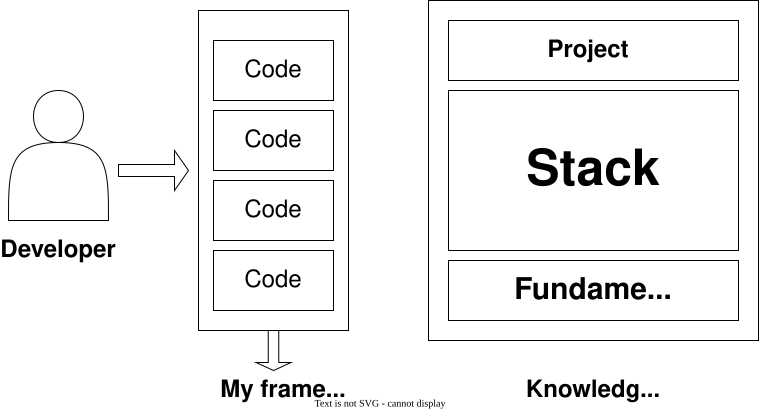
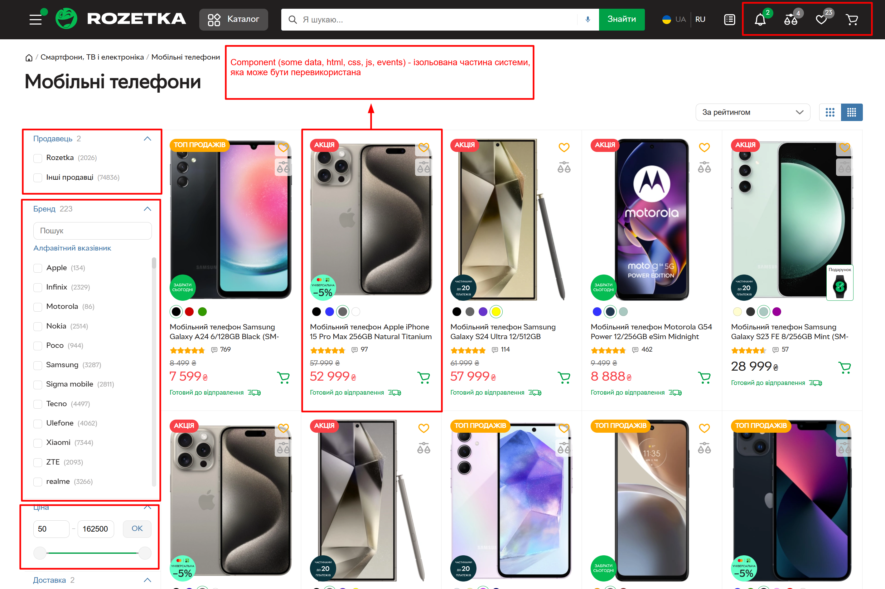
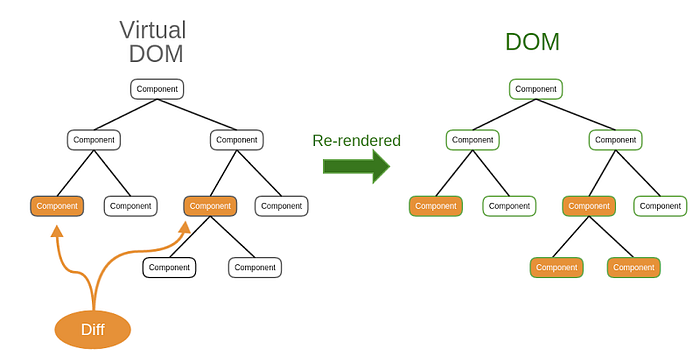

Лекція 5. Знайомство з React
План лекції:
- Що таке React?
- Історія створення React
- Для чого використовують React?
- Основні концепції React
- DOM і Virtual DOM
- Підключення React
- Структура стартового застосунку React
Що таке js фреймворк
A JavaScript framework is a pre-written collection of code that simplifies common tasks in web development. It
provides a structured way to build web applications, enforce best practices, and manage complex functionalities.
Key components of a JavaScript framework include data binding, routing, and a component-based
architecture.
Key Concepts: Data Binding, Routing and Component Architecture
Зв'язування даних - це механізм, який встановлює зв'язок між даними у застосунку та
інтерфейсом користувача. Це дозволяє при зміні даних автоматично оновлювати інтерфейс і навпаки.
Маршрутизація (роутинг) - це процес визначення того, яке представлення або компонент повинен
відображатися на основі поточної URL-адреси.
Компонентна архітектура - декомпозиція застосунку на багаторазові,
самодостатні будівельні блоки.
Що таке React?
React — це бібліотека JavaScript, створена для побудови користувацьких інтерфейсів. Вона працює на основі
HTML, CSS і JavaScript з можливістю декларативно описувати UI та створювати багаторазові компоненти.
Попри те, що React офіційно є саме бібліотекою, а не фреймворком, завдяки розвиненій екосистемі інструментів і
бібліотек
навколо нього він часто сприймається як повноцінний фреймворк.
Історія створення React
React був створений у 2013 році Джорданом Волком під час роботи у Facebook.
React виник через необхідність ефективного оновлення складних інтерфейсів та повторного використання
компонентів. З того часу React еволюціонував, став широко популярним і використовується в багатьох
великих вебзастосунках. Перший реліз відбувся у 2013 році, а документація та проєкт активно
підтримуються
спільнотою Facebook і open source.

Цікаві факти про React
React модульний, дозволяє використовувати лише потрібні частини бібліотеки, що робить її легкою і
ефективною.
React має велику й активну спільноту, яка надає розробникам багато ресурсів, таких як навчальні
посібники, плагіни та бібліотеки.
React використовується багатьма компаніями, включаючи Facebook, Instagram, Airbnb та Netflix, завдяки
його простоті використання та гнучкості.
Для чого використовують React?
Основні функції React: створення реактивних інтерфейсів, декларативний рендеринг, компонентна
архітектура, керування станом, маршрутизація.
React часто використовується для SPA, інтерактивних інтерфейсів і вебзастосунків з високою динамікою
даних.
React дозволяє створювати динамічні компоненти, що реагують на дії користувача.
Мала вага бібліотеки робить її легкою для інтеграції та масштабування у великих застосунках.
Навіщо нам потрібен React?
 Classic JavaScript app workflow
Classic JavaScript app workflow
Навіщо нам потрібен React?

Don't Repeat Yourself (DRY) principle
Бібліотека або Фреймворк?
Бібліотека – це набір попередньо написаних функцій для інтеграції у ваш проєкт. React — це
саме
бібліотека, яка допомагає будувати UI. Водночас завдяки великій екосистемі додаткових інструментів і
бібліотек (React Router, Redux, Next.js тощо) розробка з React часто відчувається подібною до роботи з
повноцінним фреймворком
Фреймворк є «шаблоном» для створення веб-додатку. Він забезпечує структуру, де можна розмістити
весь проект. «Шаблони» фреймворку створюють структуру з певними виділеними областями для вбудовування
коду, та знаходиться на більш високому рівні абстракції у порівнянні з бібліотекою.
Навіщо нам потрібен React?

Навіщо нам потрібен React?
- React надає змогу не писати щоразу заново одні й ті самі повторювані речі, а саме відображення даних,
реагування на кліки, зміни стану та інші взаємодії з інтерфейсом.
- React — це бібліотека, а не фреймворк. Це означає, що він не нав'язує жорстку архітектуру, а залишає
розробнику свободу у виборі додаткових інструментів і способів організації коду.
- React забезпечує нам розділення на компоненти (це дає змогу програмісту прицільно працювати над конкретним
вузлом системи навіть якщо він не розуміє та не усвідомлює роботу всієї системи).
-
React реалізує ключові концепції — декларативний підхід, віртуальний DOM і одностороннє зв'язування даних,
що робить роботу з інтерфейсами ефективною та передбачуваною.
Реактивність і стан - основні концепції React
Реактивність - це здатність реагувати на зміну даних та синхронізувати їх відображення.
 Generic concept of reactivity
Generic concept of reactivity
Одностороннє зв'язування, State & Props - основні концепції React
State — здатність компоненти зберігати дані, що змінюються та впливають на відображення UI.
Props — властивості, які передаються від батьківського компонента до дочірнього для налаштування та
відображення даних.
Одностороннє зв'язування (one-way data binding) у React означає, що дані завжди рухаються в одному
напрямку — від стану (state) або властивостей (props) до інтерфейсу. Зміни
відбуваються через події (наприклад, onChange), які оновлюють стан за допомогою
setState або useState. Такий підхід робить потік даних передбачуваним і полегшує
налагодження застосунку.
Example.
Декларативність - основні концепції React
Декларативність — одна з ключових концепцій React, яка означає, що розробник описує, яким має бути
інтерфейс у
певному стані, а не як крок за кроком змінювати DOM. React самостійно синхронізує стан даних із віртуальним DOM
і
ефективно оновлює реальний DOM при змінах.
DOM (Document Object Model) — це програмний інтерфейс для HTML документів. Він представляє документ у
вигляді дерева об'єктів, де кожен об'єкт є частиною документа. DOM дозволяє програмам і скриптам динамічно
надавати доступ до вмісту документа та змінювати його структуру, стиль і вміст тощо. Основні концепції
DOM: Дерево об'єктів, вузли (Nodes), доступ до елементів, маніпуляція елементами, події.
DOM і Virtual DOM
DOM — це деревоподібна структура, яка представляє
елементи вебсторінки та їхні зв’язки один з одним.
Віртуальний DOM — це концепція програмування на
JavaScript, яка використовується для ефективного
оновлення фактичної об’єктної моделі документа
(DOM) вебсторінки.
Віртуальний DOM служить посередником між кодом
JavaScript і DOM, що дає змогу швидше оновлювати
вебсторінку. Коли ви вносите зміни до вебсторінки за
допомогою JavaScript, віртуальний DOM спочатку
оновлює свою власну деревоподібну структуру, а потім
зміни відображаються у фактичному DOM. Цей підхід
більш ефективний, оскільки не вимагає оновлення
всього DOM щоразу, коли відбувається зміна. Натомість
оновлюється лише та частина DOM, яка була змінена
DOM і Virtual DOM
Подумайте про Virtual DOM як
про проєкт або чорнову
версію будинку. Ви можете
вносити зміни в проєкт, але
вони не будуть відображені в
фактичному будинку, доки ви
їх не передасте. Це економить
час і зусилля, оскільки ви
можете внести кілька змін до
проєкту, перш ніж застосувати
їх до будинку (Medium: Virtual DOM)

Декларативність – основні концепції React
- JSX (JavaScript XML) – синтаксичне розширення JavaScript, яке дозволяє описувати структуру
користувацького інтерфейсу у вигляді, схожому на HTML. JSX забезпечує декларативний спосіб поєднання логіки
та розмітки.
Documentation.
- Компоненти – основні будівельні блоки React. Компоненти дозволяють декларативно описати частину UI
як функцію від стану та пропсів, що робить інтерфейс передбачуваним і легким для підтримки.
Documentation.
Декларативний рендеринг – у React розробник описує, яким має бути інтерфейс у певному стані, а бібліотека
сама оновлює DOM через Virtual DOM при зміні стану.
Example.
Компоненти - основні концепції React
Компоненти — це блоки, які дозволяють нам розділити інтерфейс користувача (UI) на незалежні частини, які
можна багаторазово використовувати, і думати про кожну частину окремо. Documentation.

Налаштування середовища для розробки
-
Documentation.
-
Швидко спробувати React можна в онлайн-пісочницях:
-
Створення застосунку React на локальному комп'ютері (Передумови: Node.js версії 20 або новіша).
Сучасний підхід полягає у використанні збірки Vite, яка дозволяє швидко створити новий проєкт із готовим
шаблоном для React або React + TypeScript.
Вибір IDE/редактора коду
- WebStorm
- Visual Studio Code
- Visual Studio Community
Vanilla JS vs React
Приклади у директорії examples
Vanilla JS vs React
React спрощує роботу з DOM завдяки концепції Virtual DOM та декларативному рендерингу компонентів.
У чистому JavaScript потрібно вручну додавати слухачі подій і оновлювати DOM, тоді як у React оновлення
інтерфейсу відбувається автоматично при зміні стану (state) або властивостей (props),
що робить код більш передбачуваним і чистим.
React використовує одностороннє зв'язування даних, де зміни в інтерфейсі обробляються через події, які оновлюють
стан, що полегшує контроль над даними і налагодження застосунку.
React+Vite+TypeScript (Recommended)
Для створення сучасного React-застосунку рекомендується використовувати Vite як збірку.
Vite забезпечує швидкий старт проекту та миттєву заміну модулів (HMR), надаючи значно кращий досвід розробки у
порівнянні зі старими підходами.
Сам Vite виступає як інструмент для scaffold'у: він створює попередньо налаштований проект на основі обраних
опцій, а весь процес збірки та плагіни керуються Vite, що дозволяє легко інтегрувати екосистему Rollup-сумісних
плагінів.
Порівняльна таблиця React х VueJS
| Параметр |
React |
Vue.js |
| Тип |
Бібліотека |
Фреймворк |
| Рендеринг |
JSX, декларативний |
Шаблони, декларативний |
| Зв’язування |
Одностороннє |
Двостороннє |
| Компоненти |
Функц./клас. |
SFC |
| Virtual DOM |
Так |
Так |
| Стан |
useState/useReducer, Redux |
data, Vuex/Pinia |
| Крива навчання |
Середня, JSX та розуміння екосистеми |
Легка, шаблони схожі на HTML |